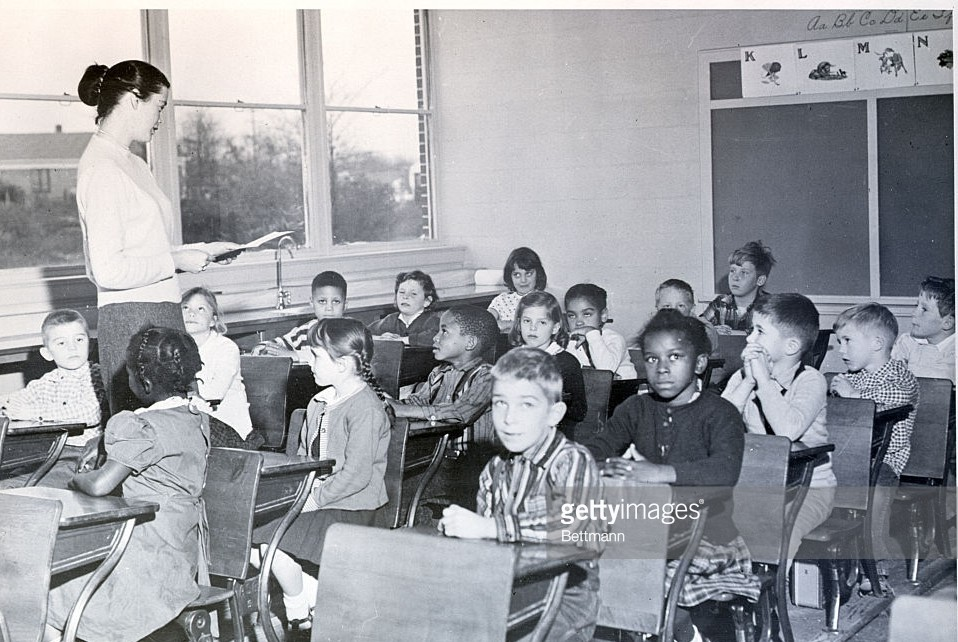
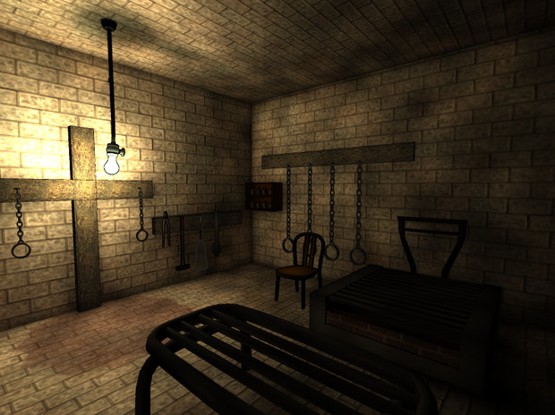

大魔王警護隊1部署
大魔王様個人をお守りするボディガード部隊です


大魔王様個人をお守りするボディガード部隊です
現長官の補佐を行う幕僚達にて構成され、親衛隊全体への査察/管理権限を持ちます

本部人員の教育、並びに大魔王領内における次世代教育の企画立案を行います
魔界内における、主に老人/女性/子供等身体的弱者の福祉・生活支援業務を担当します

魔族/魔物における希少種/珍しい特性などの保存、また古代より研究開発されつつ埋もれた技術等を捜索/発掘/研究します

魔界内における反種族的思想の持ち主や、反大魔王派閥者等の処理・矯正業務を担当します
親衛隊全体の管理/医療/法務業務を統括します
親衛隊全体の補給/登録/建設/維持管理業務を担当します
親衛隊全体の教育業務を管理運営します

親衛隊におけるアストルティア出身同胞/アストルティア人の登用/募集を担います
親衛隊作戦本部における組織/人事/供給業務を担当します
親衛隊作戦本部における訓練業務を統括します

親衛隊作戦本部における各兵科/兵器/魔獣運用の査察管理・支援業務を担当します

親衛隊作戦本部における医療業務を担います

魔界内における秩序警察の指揮・統括を担当します

秩序警察の編成/予算/宿泊/法務業務等を担当します
秩序警察の技術教育・訓練を担当します

魔界全体の消防業務を各国と連携し対応/支援します
秩序警察の管轄外となる、大都市/中都市の警察業務を防護警察が、より小さな村落の警察業務を魔界地方警察が担当します

規則に反した親衛隊員の懲戒処分を決定します
親衛隊全体の編成管理、および経済活動の把握・統括を担当します
親衛隊宿舎の運用、並びに各種施設の整備・維持管理を担当します
各国/各地域に建設された収容所の運営・管理を担当します
魔界の世界観に関する研究・分析業務を担当します
魔界の世界観に関する研究・分析業務を担当します
種族委員会内の組織・人事等の重要情報管理業務を担当します
魔族の種としての教育・文化伝承と保護業務を担当します
魔界内における種族保護指導に基づく移住業務を担当します